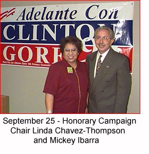

|
|
Bill Clinton and Al Gore on the Issues Strengthening America's
Families For Immediate Release November 01 - Campaign Releases New Advertisement (in Spanish): "Education" October 28 - Campaign Releases New Advertisement in Spanish: "Jobs" September 27 - New Mexico Ad Agency to Film President Clinton September 26 - President's
Family and Medical Leave Act: September 26 - Campaign Deposits in Minority-Owned Banks September 26 - Remarks by the President to the Congressional Hispanic Caucus Institute Dinner September 18 - President Clinton's Crime Initiatives Get Involved! To learn more about Hispanic/Latino outreach activities in your area, contact Ken Mireles at 202/496-1031 or the Clinton-Gore campaign office in your state. |
|
|
 Clinton/Gore Supporters Across America “Dear Mr. President, I am 37, an Hispanic, and a woman, and am raising two children by myself. I plan to become an American History teacher some day. When you came to Albuquerque on National Education Day during your first campaign, I was there to cheer you on. No presidential race has ever meant as much to me personally as that year's did...and I wish you could have known the sense of victory we felt when you took our hopes and dreams with you to the White House. Please remember: we will do all we can to keep and you and your team in Washington so you can continue to do what you do best — inspiring Americans of all colors, believing in all of our potentialities, and working hard for the best America we've ever had. Thank you for keeping our trust.” Ruth Smith — Los Cruces, NM “Dear Mr. President, In the last 4 years, I have been able to enjoy a great President getting America back on track. In my opinion you are one of the greatest Presidents. We need you four more years.” Rafeal Fernandez — Miami, FL |
Paid for by Clinton/Gore '96 General Committee, Inc.